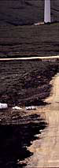
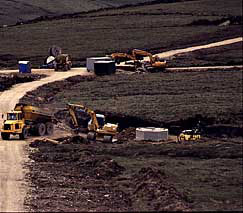

Installation Costs
for Wind Turbines

 Novar
Wind Farm, Scotland, under construction in a moor, July 1997.
Novar
Wind Farm, Scotland, under construction in a moor, July 1997.
Photograph
by Steffen Damborg
 Installation
costs include foundations, normally made of armed concrete, road
construction (necessary to move the turbine and the sections of the
tower to the building site), a transformer (necessary to convert
the low voltage (690 V) current from the turbine to 10-30 kV current for
the local electrical grid, telephone connection for remote control
and surveillance of the turbine, and cabling costs, i.e. the cable
from the turbine to the local 10-30 kV power line.
Installation
costs include foundations, normally made of armed concrete, road
construction (necessary to move the turbine and the sections of the
tower to the building site), a transformer (necessary to convert
the low voltage (690 V) current from the turbine to 10-30 kV current for
the local electrical grid, telephone connection for remote control
and surveillance of the turbine, and cabling costs, i.e. the cable
from the turbine to the local 10-30 kV power line.
Installation
Costs Vary
Obviously, the costs of roads and foundations depend on soil conditions,
i.e. how cheap and easy it is to build a road capable of carrying 30 tonne
trucks. Another variable factor is the distance to the nearest ordinary
road, the cost of getting a mobile crane to the site, and the distance
to a power line capable of handling the maximum energy output from the
turbine.
 A telephone connection and remote control is not a necessity, but is
is often fairly cheap, and thus economic to include in a turbine installation.
A telephone connection and remote control is not a necessity, but is
is often fairly cheap, and thus economic to include in a turbine installation.
 Transportation costs for the turbine may enter the calculation,
if the site is very remote, though usually they will not exceed some 15 000 USD.
Transportation costs for the turbine may enter the calculation,
if the site is very remote, though usually they will not exceed some 15 000 USD.
Economies
of Scale
It is obviously cheaper to connect many turbines in the same location, rather
than just one. On the other hand, there are limits to the amount of electrical
energy the local electrical grid can handle (see the section on Wind Turbines in the Electrical Grid). If the local
grid is too weak to handle the output from the turbine, there may be need
for grid reinforcement, i.e. extending the high voltage electrical
grid. It varies from country to country who pays for grid reinforcement
- the power company or the owner of the turbine.

|
Back | Home | Forward |
© Copyright 1998 Soren Krohn. All rights reserved.
Updated 6 August 2000
http://www.windpower.org/tour/econ/install.htm